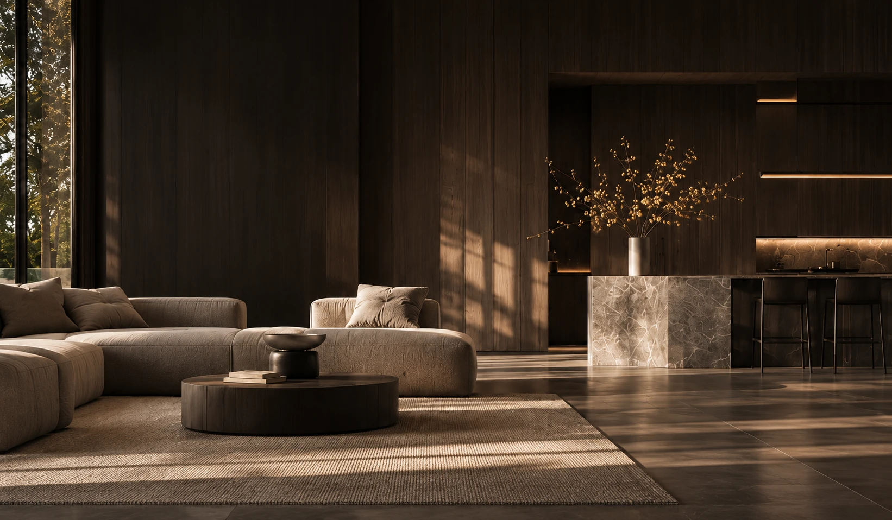
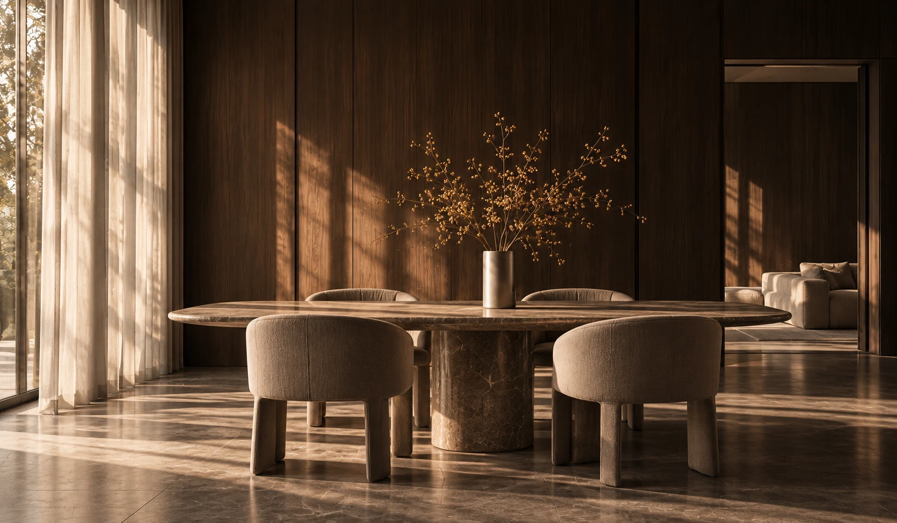

Przestrzeń Projektujemy wnętrza, w których estetyka, funkcja i detal tworzą spójną całość.
Dobry Układ / Sandra Białkowska
Każde wnętrze Najpierw Światło, otoczenie i rytm codzienności. Od tego zaczyna się każdy projekt.
Potem rysujemy Funkcja, proporcje i ruch w przestrzeni — zanim pojawi się pierwszy materiał.
Przestrzeń nabiera Makieta pokazuje skalę, światło i relacje między strefami.
Materiał, światło, Aż powstaje miejsce, w którym jesteś u siebie.
Koszalin 54,19° N · 16,17° E
12,00
8,00
01 / Miejsce 02 / Układ 03 / Bryła 04 / Wnętrze
Przewiń, aby zbliżyć się do miejsca Pomiń animację Przygotowujemy mapę…
Klasyczny widok strony
01 / O NAS
DOBRY UKŁAD / SANDRA BIAŁKOWSKA
Projektujemy Dobre wnętrze zaczyna się od poznania człowieka.
Łączymy estetykę z funkcją, codziennością mieszkańców i konsekwencją w detalach. Układ przestrzeni, materiały i wyposażenie traktujemy jako części jednej całości.
Towarzyszymy Ci od pierwszych decyzji po dokumentację i realizację wnętrza.
Poznaj nasze studio DOBRY UKŁAD Tu będzie zdjęcie
SANDRA BIAŁKOWSKA / ZESPÓŁ MATERIAŁ DO UZUPEŁNIENIA
03 / OFERTA
Wybierz swój zakres
01 FUNKCJA I CODZIENNOŚĆ
Projekt Przemyślany układ wnętrza, który wykorzystuje potencjał przestrzeni. Analizujemy Twoje potrzeby i budżet, przygotowujemy zazwyczaj trzy warianty układu, a następnie dopracowujemy wybrany kierunek i rozmieszczenie wyposażenia.
Zapytaj o projekt 02 SPÓJNA WIZJA WNĘTRZA
Projekt Pełne opracowanie Twojego wnętrza. Układ funkcjonalny, koncepcja stylistyczna, wizualizacje 3D, dobór materiałów i wyposażenia, lista zakupów z cenami oraz dokumentacja wykonawcza dla ekip.
Zapytaj o projekt 03 OD WIZJI DO REALIZACJI
Projekt kompleksowy Kompletny projekt ze wsparciem na etapie wykonania. Uzgodnione wizyty, weryfikacja zgodności prac z projektem, koordynacja i zamówienia — w zakresie określonym w umowie.
Zapytaj o projekt
04 / WIZUALIZACJA VS REALIZACJA
Od wizji RealizacjaZdjęcie studia do uzupełnienia
WizualizacjaWizualizacja studia do uzupełnienia
‹ ›
Miejsce na dopasowaną parę autentycznych ujęć — bez retuszu zmieniającego projekt.
05 / OPINIE KLIENTÓW
Opinie klientów. Miejsce na cztery autentyczne
“ Tu pojawi się
01 / DO UZUPEŁNIENIA “ Tu pojawi się
02 / DO UZUPEŁNIENIA “ Tu pojawi się
03 / DO UZUPEŁNIENIA “ Tu pojawi się
04 / DO UZUPEŁNIENIA 
DOBRY UKŁAD / PRZESTRZEŃ DLA CIEBIE
Dobre wnętrze to takie, Zdjęcie do uzupełnienia
01
Kurs jeden Zdjęcie do uzupełnienia
02
Kurs dwa Zdjęcie do uzupełnienia
03
Kurs trzy DOBRY UKŁAD / SOCIAL MEDIA
Dobry układ. Zamknij × O STUDIU
Sandra Białkowska Projektuję wnętrza, w których estetyka jest nierozerwalnie związana z funkcją, codziennością mieszkańców i konsekwencją w detalach.
Porozmawiajmy o projekcie ⟶ Zamknij × PORTFOLIO DOBREGO UKŁADU
Wnętrza z dobrym układem. W tym miejscu pojawią się projekty i realizacje studia. Zdjęcia oraz opisy są w przygotowaniu.
Porozmawiajmy o Twoim projekcie Zamknij × SKLEP DLA ARCHITEKTÓW
Wiedza z praktyki. Szkolenia pCon.planner Kurs podstawowy, kurs zaawansowany oraz pakiet obu kursów.
Poradniki i narzędzia Poradnik Projektanta, Poradnik Projektanta z plikami DWG, ZROZUM WNĘTRZA oraz ankieta do projektu wnętrza.
Nowy sklep jest w przygotowaniu.
Zapytaj o materiały ⟶